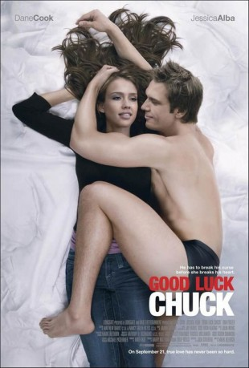
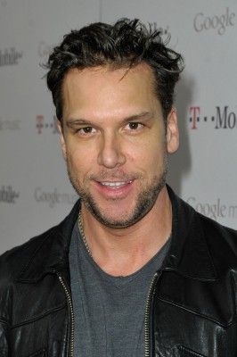
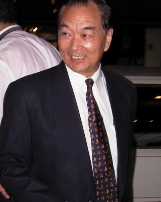
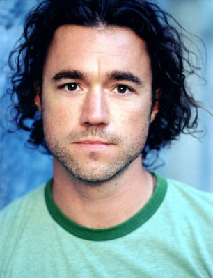
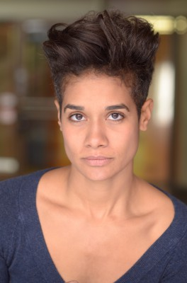
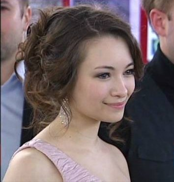
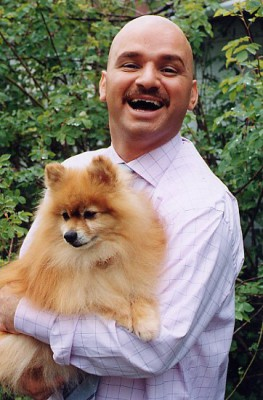
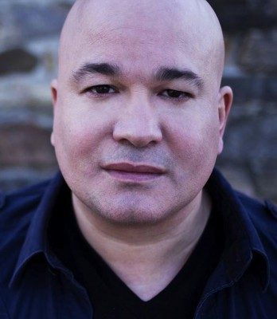

#8214 Der Glücksbringer
Alternativ: Good Luck Chuck
 
 IMDB-Wertung: 5.6 / 10
IMDB-Wertung: 5.6 / 10  Metascore: 0
Metascore: 0 
Early thirty-something dentist Dr. Charlie Logan has never experienced true love, despite having had a number of girlfriends over the years. After an announcement by one of his ex-girlfriends as such at her wedding, Charlie gets a reputation as being a good luck charm. Every woman he has slept with has met and married her dream man immediately following. He is encouraged to exploit this reputation by his long time best friend, Dr. Stu Klaminsky, a sex obsessed, sex starved schlub who became a plastic surgeon just so that he could masturbate over the sight of women's breasts. Charlie doesn't want to be solely a stepping stone for women, which is how they end up treating him once he gains this reputation as a lucky charm, but rather one's true love. He believes the woman of his dreams is accident-prone Cam Wexler, who works as the penguin caretaker at the aquarium. Cam initially doesn't want to date Charlie because of his reputation as a one-night stand type of guy. Charlie in turn ...
Jahr: 2007
Dauer: 101 Minuten
FSK: 16
Land: USA Studio: LionsgateTonspuren: DD5.1 - ,
Untertitel:
Auflösung: 1080p (1920x1040) Größe: 10127 MB
Genre: Komödie, Fantasy, Liebe
Regisseur: Mark Helfrich
Drehbuch: Josh Stolberg
Soundtrack: Aaron Zigman
Darsteller:
 Connor Price als Young Charlie
Connor Price als Young Charlie- Troy Gentile als Young Stu
- Mackenzie Mowat als Birthday Girl
- Sasha Pieterse als Goth Girl
- Caroline Ford als Jennifer
-  Dane Cook als Charlie
- Chelan Simmons als Carol
 Dan Fogler als Stu
Dan Fogler als Stu- Ellia English als Reba
-  Tseng Chang als Karaoke Singer
-  Michael Teigen als Wedding D.J.
 Chiara Zanni als Bride
Chiara Zanni als Bride- Benjamin Ayres als Groomsman
 Carrie Anne Fleming als Dirty Talker
Carrie Anne Fleming als Dirty Talker- Agam Darshi als Female Wedding Guest
 Jessica Alba als Cam
Jessica Alba als Cam Crystal Lowe als Cam's Wedding Friend
Crystal Lowe als Cam's Wedding Friend- Lonny Ross als Joe
- Tava Smiley als Woman in Car
- Michelle Andrew als Red Haired Lover
- Annie Wood als Lara
- Eliza Bayne als Wheelbarrow Lover
- Kari-Ann Wood als George W. Lover
- Victoria Bidewell als Holy Lover
-  Camille Atebe als Butch Cop
- Zara Taylor als Magazine Lover
- Simone Bailly als Matthew / Megan
- Cassandra Sawtell als Girl in Penguin Habitat
- Ian Farthing als Eleanor's Boyfriend
- Lindsay Maxwell als McTitty
- Aaron Dudley als Not George
 Liam James als Boy in Penguin Habitat
Liam James als Boy in Penguin Habitat June B. Wilde als Desperate Woman
June B. Wilde als Desperate Woman-  Jodelle Ferland als Lila
- Michelle Harrison als Anisha
- Steve Bacic als Howard
- Georgia Craig als Howard's Wife
-  Jody Racicot als Ticket Agent
-  Robert Kelly als Airport Security Guard
- Taayla Markell als Flight Attendant
 Heather Doerksen als Woman on Plane
Heather Doerksen als Woman on Plane- Mikey Granger als The Toucher - Sexy Dude in Karaoke Video (uncredited)
- Marcia Moulton als Woman in Waiting Room (uncredited)
- Uldouz Wallace als Nina (uncredited)
- Natalie Morris als Natalie
- Steve Glenn als Carol's New Man
- Téa Helfrich als Screaming Little Girl
- Yasmine Vox als Pleasure
- Connor Dunn als Frisbee Kid
- Norma Cowley als Frisbee Grandmother
Datei: X:\2007(G-M)\Glücksbringer, Der (2007, FSK16, 1920x1040).mkv seit 07.02.2018
Festplatte: HD 2007(A-Z)-2008(A-F)
 Es gibt insgesamt 64 Filme in der Gruppe '2007(G-M)'
Es gibt insgesamt 64 Filme in der Gruppe '2007(G-M)'